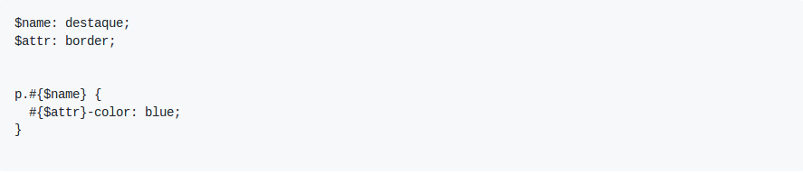
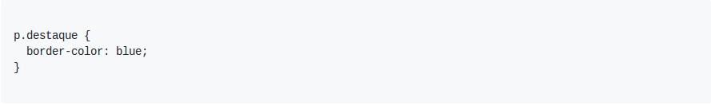
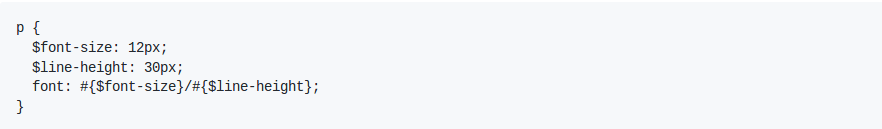
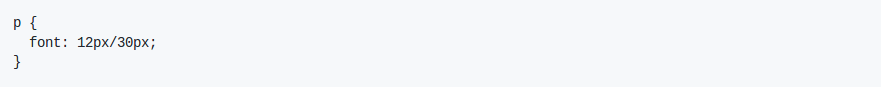

É possível usar variáveis Sass em seletores e nomes de propriedade com o recurso de interpolação. A interpolação é um recurso que está presente em várias linguagens de programação e permite que valores sejam encaixados dentro de outros valores.
Veja alguns exemplos a seguir.
Utilizando interpolação em nomes de seletores:
Será compilado para:
Utilizando interpolação em nomes de propriedades:
Será compilado para:
A interpolação pode ser muito bem utilizada dentro de funções e mixins. Serão exibidas outras formas de utilizar interpolação agregadas com recursos que serão vistos nos próximos tópicos.